자연생태복원기사(구) (2012-08-26 기출문제)
1과목: 환경생태학개론
1. 다음 설명의 ( )안에 알맞은 용어는?
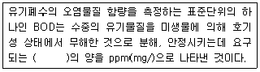
- 질소
- 탄소
- 산소
- 무기물
(정답률: 87%)

2. 생태계의 구성요소 중 다음은 무엇에 관한 설명인가?
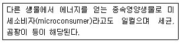
- 소비자
- 1차 생산자
- 2차 생산자
- 분해자
(정답률: 82%)
3. 다음 중 천이의 초기 종조성(Initial floristic composition)모델 설명으로 옳은 것은?
- 나지에서 극상에 이르는 전 과정을 말한다.
- 사주나 나지 같은 식물이 없는 지역에서 처음으로 형성되는 군집에 관한 것이다.
- 개척군집이 형성된 지역에 수십년 또는 수백년이 지난 다음에 형성되는 안정된 군집에 관한 것이다.
- 천이의 전 과정을 통해 그 지역을 점유할 모든 종이 천이가 시작될 때부터 그 지역에 존재한다는 것이다.
(정답률: 69%)
4. 생태계내 에너지에 관한 설명 중 옳은 것은?
- 에너지는 생물군을 통해 순환한다.
- 단일방향으로 에너지는 흐르고 열로서 배출되며 순환되지 않는다.
- 에너지는 생산자, 소비자, 분해자 순으로 또는 그 역순으로 흘러간다.
- 에너지는 환경조건에 따라 흘러가기도 하고 순환하기도 한다.
(정답률: 70%)
5. 생태계가 변화에 저항하여 평형상태를 유지하려는 경향을 무엇이라고 하는가?
- 향상성(homeostasis)
- 천이(succession)
- 부영양화(eutrophication)
- 간섭(interference)
(정답률: 97%)
6. 다음 중 하천의 자정작용에 대한 설명으로 옳지 않은 것은?
- 오염물질이 시간의 지남에 따라 식물체에 포집되거나 무해한 물질로 전환된다.
- 오염물질이 과도하게 유입되면 혐기성변화가 일어나며 더 이상 자정작용이 진행되지 않는다.
- 자정계수가 클수록 자정작용의 속도는 느려진다.
- 독성을 가진 화합물이 같이 유입되면 생물종의 다양성은 없어지고 자정계수는 적어진다.
(정답률: 82%)
7. 영양물질이 유입되는 생태계(receiving ecosystem)에서 부양양호의 문제점 중 적당하지 않는 것은?
- 상수 처리과정에서 거름(filter)의 용이성
- 음용수로서의 부적합성
- 상업적 어종의 감소
- 건강상의 유해성
(정답률: 78%)
8. 다음 중 연안지역을 육지화 시키는 간척(reclamation)에 의하여 나타나는 현상이 아닌 것은?
- 지역 활성화
- 농경지 또는 산업용지 확보
- 도로와 연안 교통망 개설 등 교통개선
- 간척지 개발에 의한 해양오염 감소
(정답률: 96%)
9. r -선택과 K -선택에 따른 개체군의 생태학적 발달 유형을 바르게 설명한 것은?
- K -선택을 하는 개체군의 수명은 보통 1년 이상으로 길다.
- r -선택을 하는 개체군의 사망은 좀 더 방향성이 있고 밀도 의존적이다.
- K -선택을 하는 개체군의 종내ㆍ종간 경쟁은 변하기 쉽고 느슨하다.
- 개체군은 기후가 변하기 쉽고 예견하기 어려우며 불확실할 때에는 K- 선택을 한다.
(정답률: 62%)
10. 식물의 뿌리에 관한 설명 중 ( )안에 적합한 용어는?
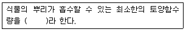
- 조위계수
- 야외용수
- 유료계수
- 흡습용수
(정답률: 58%)
11. 다음 중 온실효과로 인한 영향으로 예측되지 않는 것은?
- 기후대가 북쪽으로 이동하면 현재의 온대지역은 덮고 건조해진다.
- 기후대가 북쪽으로 이동하면 북방침엽수림은 온대가 된다.
- 극지반의 만년설이 녹아 해안지역이 범람한다.
- 지구에 도달하는 햇빛을 감소시켜 온도를 더 낮게 한다.
(정답률: 88%)
12. 황순환의 설명으로 옳지 않은 것은?
- 동식물 시체 속의 유기태황을 분해하여 SO42-으로 전환시키는 미생물은 Aspergillus이다.
- 호수의 진흙 속이나 심해의 바닥에 가라앉은 SO42-은 혐기성 상태에서 Desulfovibrio에 의하여 기체형태의 H2S로 환원된다.
- 산성비란 산도(pH)가 6.5 이하인 강우를 말하며, 대기중의 NO2와 아황상가스(SO2)가 녹아서 산성을 나타낸다.
- 지각에 존재하는 황은 화산활동과 화석연료의 연소를 통하여 대기권으로 유입된다.
(정답률: 81%)
13. 탄화수소의 분류 중 하나이며, 분자구조 중 적어도 6탄소 고리인 하나의 벤젠고리를 가지며 독특한 냄새를 풍기는 화합물을 무엇이라 하는가?
- 방향족 탄화수소
- 지방족 탄화수소
- 사슬고리족 탄화수소
- 파라핀족 탄화수소
(정답률: 69%)
14. 초식에 대한 식물의 방어에 관한 설명으로 옳지 않은 것은?
- 초식에 대한 식물의 방어는 형태적, 화학적 방어로 구분된다.
- 글리코사이드는 1%이하의 농도에서도 유충의 생장을 저해한다.
- 십자화과, 가지과 식물은 알카로이드와 같은 부산물을 생산하여 저장한다.
- 탄닌은 안정된 군집의 장수하는 식물에서 대부분 생설된다.
(정답률: 61%)
15. 다음 중 생태계 보전을 위한 용도지역별 규제 및 허용 행위가 잘못 연결된 것은?
- 핵심지역 - 생태관광 및 학습활동
- 완충지역 - 모니터링과 환경교육
- 전이지역 - 환경교육 및 친환경시설
- 전이지역 - 친환경적 주거지역
(정답률: 74%)
16. 생태적 지위가 동일한 짚신벌레속(paramecium)의 두 종은 각각의 공간에서는 잘 자라지만 동일한 공간에서는 경쟁에 의해 타종을 배제한다는 사실에서 알 수 있는 법칙은 무엇인가?
- 중간교란설
- 가우스법칙
- Liebig의 최소량 법칙
- Allee의 법칙
(정답률: 67%)
17. 다음 중 지하수의 오염원이 아닌 것은?
- 땅에 매립한 가정의 특성물질
- 저장된 공장의 폐기물 누출
- DOT 같은 화학물질의 사용
- 겨울에 제빙염(de-icing salts)의 살포
(정답률: 74%)
18. 진행 방향이 작고 수명이 짧아지거나 밀도가 낮은 방향으로 변화되어 일시적이거나 정체되는 상태로 유지되는 천이를 무엇이라고 하는가?
- 진행적 천이
- 퇴행적 천이
- 관목천이
- 초본천이
(정답률: 86%)
19. 인위적 활동 중 생물종의 멸종 또는 멸종위기에 처하게 하는 원인으로 다음 중 거리가 먼 것은?
- 과도한 포획 및 이용
- 도입된 포식자
- 서식지 파괴
- 생태관광 활동
(정답률: 80%)
20. 다음 중 “내성범위”로 가장 적합한 것은?
- 고저항범위~저저항범위 구간
- 고저항범위~저치사유발점 구간
- 고치사유발점~저저항범위 구간
- 고치사율발점~저치사유발점 구간
(정답률: 60%)
2과목: 환경계획학
21. 다음 자연환경보전기본계획에 대한 설명 중 틀린 것은?
- 자연환경보전법에 의한 계획으로 10년단위로 계획을 수립한다.
- 자연환경보전 기본원칙 중 하나는 전문가 집단 및 시민집단이 자연환경보전에 적극적으로 참여하고 자연을 건전하게 이용할 수 있는 기회가 증진되어야 한다.
- 환경부장관은 자연 환경보전기본계획을 수립함에 있어서 미리 관계중앙행정기관의 장과 협의를 거쳐야 한다.
- 자연환경 보전기본방침은 자연환경보전법에 명기된 자연환경보전 기본원칙을 실현하기 위한 것이다.
(정답률: 48%)
22. 국토의 계획 및 이용에 관한 법률에서 용도지역안의 건폐율의 최대한도는 관할구역의 면적 및 인구규모, 용도지역의 특성 등을 감안하여 규정되나, 지방자치단체의 조례가 아닌 법상 계획관리지역의 건폐율은?
- 40% 이하
- 50% 이하
- 60% 이하
- 70% 이하
(정답률: 69%)
23. 다음 중 생물지리지역 접근에 있어 경관지구(landscape district)의 방법 및 특징으로 틀린 설명은?
- 경계에 있어 식생, 지형, 능선 및 자연부락 등에 의해 결정된다.
- 유역과 산맥에 의해 구분되며 관찰자가 인식할 수 있는 범위이다.
- 주역주민이 그 지역에 대한 친밀한 이름을 가지는 경우가 많으며, 특정지역으로 인식하기도 한다.
- 지형, 동ㆍ식물 서식현황, 유역, 토지이용패턴을 중심으로 일차적으로 구분한다.
(정답률: 24%)
24. 다음 중 자연환경보전법에 의한 자연환경보전 기본원칙에 해당하지 않는 것은?
- 자연생태와 자연경관은 인간활동과 자연의 기능 및 생태적 순환이 촉진되도록 보전ㆍ관리되어야 한다.
- 모든 국민이 자연환경보전에 참여하고 자연환경을 건전하게 이용할 수 있는 기회가 증진되어야 한다.
- 자연환경보전과 자연환경의 지속가능한 이용을 위한 국제협력은 증진되어야 한다.
- 자연환경보전은 국토의 이용에 우선하여 고려되어야 한다.
(정답률: 58%)
25. 다음 생태공원내에서 이루어지는 환경교육 내용들 중 적절치 않은 것은?
- 환경교육을 위한 프로그램은 모든 이용자들에게 공통적이고 일반적인 내용으로 작성되는 것이 바람직하다.
- 자연현상, 환경ㆍ문화적 지식 등을 전달하기 위한 환경교육 전개수법으로서 해설(interpretation) 및 해설자(interpreter)의 역할이 중요하다.
- 해설자가 직접 수행하지 않는 팜플렛, 안내판, 전시물등의 시설물도 간접적인 해설 서비스로 볼 수 있다.
- 체험학습은 가설적 사고를 실제 행동으로 실행함으로써 이해의 과정을 구조화하는데 바람직하다.
(정답률: 74%)
26. 우리나라 환경영향평가 제도는 1971년 공해방지법의 공해사전대책 조항으로 시작하여, 1981년 환경보전법의 개정과 “환경영향평가서 작성등에 관한 규정”이 제정되면서 본격적으로 시행되었는데, 1986년 환경보전법의 개정으로 이루어진 환경영향평가 제도상의 가장 큰 변화는 다음 중 무엇인가?
- 정부사업뿐 아니라 공공단체, 정부 투자기관의 사업을 추가로 포함시켰다.
- 주민참여 제도가 도입되어 초안평가서와 최종평가서가 분리되었다.
- “관광단지”개발과 같은 민간부분의 개발사업이 추가되었다.
- 지역단위 개발사업에 대한 평가폅의 업무를 지방환경청으로 위임하였다.
(정답률: 76%)
27. 다음 중 관련 법과 환경보전을 위한 규제 지역의 내용이 서로 다른 것은?
- 자연환경보전법 - 생태ㆍ경관보전지역
- 습지보전법 - 습지보호지역
- 수도법 - 상수원보호구역
- 환경정책기본법 - 토양보전대책지역
(정답률: 75%)
28. 환경계획의 주요 개념과 이론이 아닌 것은?
- 환경사회시스템론
- 환경경제이론
- 환경용량개념
- 환경공간이론
(정답률: 60%)
29. 현재 우리나라의 환경영향평가 등의 분야는 전략환경영향평가, 환경영향평가, 소규모 환경영향평가로 구분할 수 있다. 그 중 환경영향 평가 항목은 몇 개 분야 몇 개 항목인가?
- 3개분야 20개 항목
- 6개분야 20개 항목
- 3개분야 21개 항목
- 6개분야 21개항목
(정답률: 56%)
30. 녹지자연도를 대신하고 있는 생태자연도의 경우 지역을 구분하는 기준으로 적당한 것은?
- 1등급, 2등급, 3등급, 4등급으로 4등급
- 0등급, 1등급, 2등급, 3등급으로 3등급
- 1등급, 2등급, 3등급, 절대보전지역으로 4등급
- 1등급, 2등급, 3등급, 별도관리지역으로 4등급
(정답률: 64%)
31. 국토의 환경적 가치를 종합적으로 평가하여 5등급으로 구분하고, 지속가능한 국토관리에 활용하고자 한 것은 다음 중 어느 것인가?
- 국토환경성평가도
- 생태ㆍ자연도
- 녹지자연도
- 식생보전등급
(정답률: 53%)
32. 도시 우수처리시스템에 관한 설명으로 적합한 것은?
- 우수처리 단계는 사전처리 - 이용 - 저류 - 침투 - 배수이다.
- 저류 단계에서는 사전 정수 처리를 위하여 저류옥상을 사용한다.
- 이용 단계의 과정은 오염물질이 지하수로 유입되는 것을 막는 과정이다.
- 침투 단계에서 정수 및 저류 기능을 위하여 침투구덩이와 침투조를 사용한다.
(정답률: 63%)
33. 우리나라 연안관리법에서는 연안육역을 규정하고 있는데 다음 설명의 ()안에 적합한 수치는?
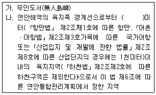
- 300
- 500
- 700
- 1000
(정답률: 67%)
34. 「국토기본법」에 의한 국토종합계획의 계획기간은 몇 년인가?
- 10년
- 20년
- 30년
- 40년
(정답률: 79%)
35. 다음 자연자원을 관리하는 방법 중 생태계가 지속되는 것이 가능하도록 하는 과정 및 유형의 영구화를 목적으로 생태계를 관리하는 것은?
- 적응적 생태계 관리(Adaptive ecosystem management)
- 지속적 생태계 관리(Sustainable ecosystem management)
- 생태적 생태계 관리(Ecological ecosystem management)
- 영구적 생태계 관리(permanent ecosystem management)
(정답률: 66%)
36. 다음 중 토지이용계획의 역할이 아닌 것은?
- 도시의 무계획적인 확산
- 정주환경의 현재와 장래의 공간구성
- 세부공간 환경설계에 대한 지침 제시
- 사회의 지속가능성을 위한 토지의 보전
(정답률: 82%)
37. 열역학 제 2법칙에 대한 설명으로 틀린 것은?
- 엔트로피 증가의 법칙이라 불리운다.
- 고립계에서는 에너지 변환 시 엔트로피 총량은 감소한다.
- 에너지는 무질서가 증가하는 방향 즉, 엔트로피가 증가하는 방향으로 이동한다.
- 엔트로피의 증가라 함은 사용 가능한 에너지가 사용 불가능한 에너지의 상태로 전환됨을 의미한다.
(정답률: 67%)
38. 다음 중 GIS를 활용한 자연환경정보의 내용이 아닌 것은?
- 대상지 규모
- 토지 피복/이용
- 산림 및 산지
- 오염물질 종류
(정답률: 82%)
39. 광역도시계획 중 광역계획권의 지정 목적을 달성하는데 필요한 사항이 아닌 것은?
- 광역계획권의 녹지관리체계와 환경보전에 관한 사항
- 광역계획권의 공간구조와 기능분담에 관한 사항
- 경관계획에 관한 사항
- 재원조달에 관한 사항
(정답률: 74%)
40. 내셔널 트러스트 운동의 국내외 동향의 설명으로 틀린 것은?
- 일본의 내셔널 트러스트 운동은 주민중심과 행정 중심의 연대를 통해서 이루어진다.
- 영국의 내셔널 트러스트 운동은 자발적인 회원들의 참여를 통해 이루어지고 있다.
- 한국의 내셔널 트러스트 운동은 2000년 1월 창립대회를 갖고 공식적으로 출범하였다.
- 한국의 내셔널 트러스트 운동은 행정기관의 주도에 의해서 진행되고 있다.
(정답률: 65%)
3과목: 생태복원공학
41. 매립지 복원공법의 하나로 하층부에 세립 미사질 토층에 파일을 박아 하단부 투수층까지 연결한 후 파일 파이프안에 모래, 사질양토, 자갈 등을 넣어 배수를 원활히 하는 방법은?
- 사주법
- 사구법
- 전면객토법
- 대상객토법
(정답률: 53%)
42. 생태복원을 위한 식물재료의 조달방법 중 다음 [보기]가 설명하는 것은?
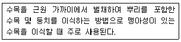
- 표토채취
- 매트이식
- 근주이식
- 소스이식
(정답률: 58%)
43. 다음 설명하는 습지의 형태는?
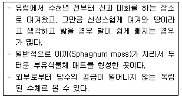
- 소택지
- 습초지
- 산성습지
- 플라야
(정답률: 53%)
44. 식물체가 이용하기 용이한 수분의 범위로 가장 적합한 것은?
- 포장용수량에서 수분담량 사이의 수분
- 포장용수량에서 모세관 연락절단점 사이의 수분
- 포장용수량에서 초기위조점 사이의 수분
- 포장용수량에서 영구위조점 사이의 수분
(정답률: 60%)
45. 다음 중 생물다양성의 감소 원인과 거리가 먼 것은?
- 수질오염
- 산성비
- 유기농산물
- 외래종의 도입
(정답률: 87%)
46. 건조지대의 산비탈 등지에 토양수자원을 확보할 목적으로 빗물 등을 땅 속으로 침투시키기 위하여 수평으로 구덩이를 파놓는 수토보전공법은?
- 확수구법
- 식생반조공
- 계단식 집수공법
- 식생대조공
(정답률: 53%)
47. 다음 중 훼손지 비탈면 녹화식물 중에서 외국 도입 초종이 아닌 것은?
- Arumdinella hirta
- Panicum virgatum
- Lolium perenne
- Ageostis palustris
(정답률: 60%)
48. 생태공원의 계획 과정과 그 내용 연결이 옳지 않은 것은?
- 목적 및 목표 설정 - 목표종 및 서식처 특성 설정
- 현황 조사 및 분석 - 유지 및 관리계획
- 기본구상 - 프로그램의 기능적 연결
- 기본계획 및 분별 계획 - 서식처 계획, 토지이용계획
(정답률: 67%)
49. 수목을 식재하기 전에 주는 슬러지는 질소질비료의 공급원으로서의 역할도 한다. 수분함유비율이 40%이고, 슬러지 건조물 중의 질소의 비가 5%, 질소 유효율이 40%인 슬러지를 사용함으로써 3kg/10ha의 질소시비효과를 기대할 경우, 사용하여야 할 슬러지의 양(kg/10ha)은?
- 250
- 500
- 750
- 1000
(정답률: 45%)
50. 다음 생태계 복원에 관한 개념 설명 중 잘못된 것은?
- 원래의 생태계 또는 극상 단계의 생태계로 복원하는 것을 이상적인 복원이라 할 수 있다.
- 생태계는 시간이 경과함에 따라 구조와 기능이 발달하면서 방향성을 갖는다.
- 자연계의 천이에서 극상 단계까지는 일반적으로 생태계가 안정, 발달 할수록 종수와 다양성이 증가한다.
- 종수와 다양성이 증가할수록 총 생체량은 증가하고 영양물질은 감소한다.
(정답률: 77%)
51. 분사식 씨뿌리기 공법 중에서 건식종자뿜어붙이기의 특징으로 옳지 않은 것은?
- 혼합한 물량이 적으므로 뿜기작업할 때에 뿜기재료의 유실이 적다.
- 습식 종자뿜어붙이기에 비하여 도달거리가 길어 시공성이 좋다.
- 침식방지제를 사용하면 두껍게 뿜어 붙일 수 있다.
- 뿜기재의 밀도가 비교적 높지 않으므로 보수성이 높다.
(정답률: 64%)
52. 야생동물 이동통로 조성시 각 종별 이동 촉진을 위한 방법으로 가장 적절한 것은?
- 양서ㆍ파충류를 위해서 서식 및 이동을 위한 수변 환경을 조성
- 조류를 위해서 다층구조가 형성된 1~2m 정도의 좁은 녹지축 조성
- 이동통로의 신속성을 위해 단층구조 형성과 돌담, 바위등의 지장물을 제거
- 곤충류를 위해서 1~2km 정도의 넓은 서식처 조성
(정답률: 74%)
53. 훼손지의 복원시에는 공중질소를 고정하는 근균과 공생하는 콩과식물을 도입함으로 토양환경의 개선을 도모할 수 있다. 다음 중 훼손된 비탈면에 도입할 수 있는 콩과식물에 해당되지 않는 것은?
- 싸리나무
- 알팔파
- 오리나무
- 낭아초
(정답률: 56%)
54. 도로 등의 개발에 따른 서식처의 분단화는 생물의 서식 및 이동에 지장을 주는데, 다음 설명하는 효과는 무엇인가?
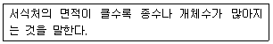
- 거리효과
- 면적효과
- 장벽효과
- 가장자리효과
(정답률: 69%)
55. 개별사업이 이루어지기 이전에 훼손될 습지의 영향을 고려해서 미리 습지를 만들고, 향후에 개발사업이 이루어질 때 미리 만들어진 습지만큼을 훼손할 수 있도록 하는 방법은?
- On-site방법에 의한 대체습지조성
- Off-site방법에 의한 대체습지조성
- On-site/Off-site방법에 의한 대체습지조성
- Mitigation banking에 의한 대체습지조성
(정답률: 55%)
56. 도시지역내 생태공원을 조성하면서 생물종을 유치하려고 한다. 다음 중 유치하려는 생물종의 서식가능성이 가장 낮은 것은?
- 잠자리
- 산개구리
- 맹꽁이
- 산양
(정답률: 77%)
57. 양단면적이 각각 60m2, 50m2이고, 두 단면간의 길이가 20m일 때의 평균단면적법에 의한 토사량은 얼마인가?
- 750m3
- 900m3
- 1100m3
- 1500m3
(정답률: 69%)
58. 주야로 차량통행이 많은 도로 상에 야생동물 이동통로를 조성하는 경우, 이동통로 유형의 적합성에 대한 설명이 맞는 것은?
- 육교형이 터널형보다 가장 적합하다.
- 터널형이 육교형보다 가장 적합하다.
- 육교형이나 터널형 모두 비슷하다.
- 육교형이나 터널형 모두 부적합하다.
(정답률: 53%)
59. 녹화기반 재료에는 여러 가지가 있는데, 이 중 토양개량 자재의 종류로 적합하지 않은 것은?
- 무기질계 토양개량자재
- 유기질계 토양개량자재
- 고분자계 토양개량자재
- 볏짚 등 멀칭재
(정답률: 54%)
60. 산불은 안정된 산림생태계를 교란시켜 식생천이의 방향을 바꾸어 놓는 기능 이외에도 생태학적으로 여러 가지 중요한 역할을 담당한다. 다음 중 그 설명으로 틀린 것은?
- 심한 산불은 기존의 수목을 대부분 죽이며, 활엽수의 경우에는 맹아(萌芽, sprouting)로 갱신하게 된다.
- 심한 산불은 임목의 밀도를 감소시켜 간벌효과를 나타내며, 가벼운 지표화는 하층식생물 제거함으로써 상층 임목의 생장을 촉진시킨다.
- 산불은 유기물의 분해가 잘 되는 남반구의 활엽수림에 큰 도움이 되며, 산불발생 후에는 생물학적인 질소고정이 감소된다.
- 산불은 자발적으로 진행되는 산림천이의 방향을 바꾸어 놓는데, 산불의 빈도와 감도에 따라 산불에 잘 견디고 갱신이 촉진되는 수종으로 산림이 대체된다.
(정답률: 64%)
4과목: 경관생태학
61. 하나의 경관을 정량화할 때 우리가 관심을 가져야 할 사항으로 관련이 적은 것은?
- 적절한 서식지를 포함하는 경관의 비율
- 대상 동물에게 필요한 최대 서식지의 면적
- 적당한 서식지 패치의 개수
- 패치 간의 연결성 정도
(정답률: 45%)
62. 생태이동통로를 설치하기 위한 적지선정에 활용하는 GIS나 RS기법에 대한 설명으로 알맞지 않은 것은?
- 다양한 조건을 이용하여 모의실험이 가능하다.
- 생태이동통로를 이용하는 모든 동물종을 예측할 수 있다.
- 객관적으로 합리적인 입지선정 대안을 제시할 수 있다.
- 대상지역에 대한 상세한 정보와 대용량의 자료를 용이하게 처리할 수 있다.
(정답률: 69%)
63. 토지이용과 경관변화를 살펴보기 위하여 과거와 현재의 인공위성영상을 분석한 조제도는 무엇인가?
- 토지이용도
- 토지피복분류도
- 생태자연도
- 녹지자연도
(정답률: 53%)
64. 최근 농촌경관 변화의 경향과 관계가 없는 것은?
- 농촌 마을 숲 관리 및 연료목 사용 증가
- 농지전환을 통한 토지모자이크의 변화
- 농촌 노동 인구의 감소로 인한 휴경지 증가
- 고립된 마을의 증대
(정답률: 53%)
65. 지역환경시스템의 경관계획에 있어서 그림에서 보여주는 바와 같이 가장 우선되는 생태학적 필요 요소들이 4가지 있다. 이들 필수 요소에 대한 설명이 잘못된 것은?
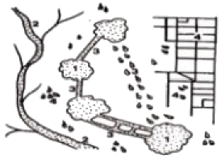
- 1 : 몇 개의 큰 농경지 바탕
- 2 : 주요 지류 또는 하천 통로
- 3 : 큰 조각 사이의 통로와 징검다리의 연결성
- 4 : 기질을 따라 나타나는 자연의 불균일설 흔적
(정답률: 62%)
66. 지연지역 구분에서 고려되어야 하는 주요인자가 아닌 것은?
- 토양
- 지형
- 물질순환
- 식생
(정답률: 74%)
67. 로젠베르크 등(1997)의 생태통로 사용에 대한 연구보고서에서 통로의 유효성에 대한 공통의 패턴으로 정리하였다. 이중 적당하지 않은 것은?
- 동물들은 그들의 서식지를 구성하는 요소가 포함되는 이동경로를 선택하는 것 같다.
- 기질이 이동로로서 사용되고 있는지의 여부는 생물의 서식지와 기질의 질적 특성이 어느 정도 차이가 있는지에 의해 결정된다.
- 가장자리에서는 생물의 대부분이 생식에 긍정적인 영향을 받는다.
- 동물의 행동은 바람직한 서식지가 적은 지역에서는 변화한다.
(정답률: 58%)
68. 천이에 대한 설명으로 가장 적합하지 않은 것은?
- 생태계 외부의 힘으로 진행되는 2차천이를 타발적 천이(allogenic succession)라 한다.
- 종이 다양해지고 현존 생태량이 증가하게 되면 진행적 천이(progressive succession)라 한다.
- 극상군집상태에서 다시 어린 수목이 자라는 현상을 퇴행적 천이(retrogressive succession)라 한다.
- 1차천이 중 암석지나 사구 등에서 시작되는 것은 건성천이(xerarch succession)라 한다.
(정답률: 75%)
69. 자연경관에서 특별히 보호되어야 할 자역과 관계가 먼 것은?
- 자연보호지역
- 경관보호지역
- 대규모 리조트 개발지역
- 잔존 경관요소 및 주요 생물서식공간
(정답률: 72%)
70. 다음 [보기]의 설명 중 ()안에 들어갈 용어는?
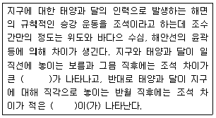
- 고조, 저조
- 사리, 조금
- 창조, 낙조
- 만조, 간조
(정답률: 72%)
71. 경관생태학에서 토지 위의 식생패치가 아닌 것은?
- 교란형패치
- 환경형패치
- 재생형패치
- 보조형패치
(정답률: 50%)
72. 우리나라 농촌경관에 대한 설명으로 알맞지 않은 것은?
- 묘지관리와 농업 등에 의하여 주기적으로 또한 반복적으로 교란을 받고 있다.
- 대체적으로 도로 → 논 → 밭 → 주거지 → 과수원 → 묘지 → 관리림 → 조림지 → 자연식생의 순을 보인다.
- 기후적인 요인에 의하여 농촌경관을 구성하는 공간요소나 그들의 배열양식에 차이가 있을 수 있으나 우리나라의 대부분의 농촌에서는 유사한 경향을 보이고 있다.
- 농촌의 숲은 인간이 조성하였기 때문에 패치형태지수(Patch shape Index)값이 비교적 높다.
(정답률: 41%)
73. 다음 중 도로 비탈면의 구조에 포함되지 않는 것은?
- 절개비탈면
- 소단
- 성토비탈면
- 암석비탈면
(정답률: 67%)
74. 사전환경성 검토서의 작성시 구비 내용이 아닌 것은?
- 개발업자와의 합의서
- 대상지역의 용도지역 구분 등 토지이용현황
- 개발사업의 목적 및 추진절차 등 사업계획 관련 사항
- 대상지역 안의 생태ㆍ경관보전지역 등 해당하는 지역의 분포현황
(정답률: 69%)
75. 다음 중 에코톱의 개념에 대한 설명으로 가장 적합한 것은?
- 경관을 이루는 기본적인 생물 서식 공간
- 하나의 지리적 단위에서 land system의 조합
- 주변 경관에 영향을 미치며 인간 생활에 변화를 유도하는 토지이용체계
- 지권의 토지속성 중 최소한 하나에서 동질성을 갖는 가장 작은 총체적인 토지 단위
(정답률: 55%)
76. 다음 중 인공갯벌의 조성목적이라고 볼 수 없는 것은?
- 상실 위험이 있는 기존 갯벌의 보호 및 기능을 유지
- 상실된 갯벌을 대체할 수 있는 갯벌의 조성
- 연안개발 적합지로 공간의 활용
- 연안환경 인프라로서 새로운 갯벌의 창출
(정답률: 58%)
77. 해양의 유형별 경관생태 중 잘못된 것은?
- 갯벌의 유형에는 모래갯벌, 펄갯벌, 혼합 갯벌 등이 있다.
- 암반해안은 해파에 의한 침식해안으로 파도의 침식작용의 결과로 형성된다.
- 사빈은 해류, 하안류에 의하여 운반된 모래가 파랑에 의하여 밀려 올려지고, 탁월풍의 작용을 받아 모래가 낮은 구름 모양으로 쌓인 지형을 말한다.
- 해안 사구는 육지와 바다 사이의 퇴적물 양을 조절하여 해안을 보호하는 기능을 가지고 있다.
(정답률: 56%)
78. 해안경관을 오염시키는 요인 중 하나로 볼 수 있는 유류 유출사고는 해양생물에 여러 가지의 피해를 가져다준다. 이러한 유류 유출 사고 시, 피해가 가시적으로 나타나며, 일시적으로 가장 많은 개체수가 큰 피해를 입게되는 생물의 종류는?
- 바다조류
- 어류
- 염습지 식물
- 저서생물
(정답률: 53%)
79. GIS 응용시스템을 구현하기 위한 작업 절차로 옳은 것은?
- 요구분석 → 현행물리모델 설계 → 신논리모델 설계 → 레이어 DB 설계 → 응용업무 구현 → 시험
- 요구분석 → 레이어 DB 설계 → 현행물리모델 설계 → 신논리모델 설계 → 응용업무 구현 → 시험
- 요구분석 → 신논리모델 설계 → 현행물리모델 설계 → 레이어 DB 설계 → 응용업무 구현 → 시험
- 요구분석 → 현행물리모델 설계 → 레이어 DB 설계 → 신논리모델 설계 → 응용업무 구현 → 시험
(정답률: 34%)
80. 야생동물 복원에서 야생동물 종의 움직임에 대한 고려는 매우 중요하다. 다음 설명은 어떤 움직임에 대한 설명인가?
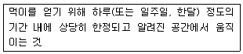
- 이동(dispersal)
- 이주(migration)
- 돌발적 이동(eruption movement)
- 행동권 이동(home range movement)
(정답률: 67%)
5과목: 자연환경관계법규
81. 자연공원법상 용도지구 중 공원자연보존지구의 완충공간(緩衝空間)으로 보전할 필요가 있는 지역은?
- 공원자연완충지구
- 공원자연환경지구
- 공원완충보전지구
- 공원완충시설지구
(정답률: 60%)
82. 환경정책기본법령상 각 항목별 대기환경기준으로 옳지 않은 것은?
- 아황산가스(SO2)의 1시간평균치는 0.15ppm 이하이다.
- 이산화질소(NO2)의 연간평균치는 0.03ppm 이하이다.
- 오존(O3)의 1시간평균치는 0.1ppm 이하이다.
- 벤젠의 연간평균치는 0.5μg/m3 이하이다.
(정답률: 67%)
83. 다음 자연환경관계법규 중 환경부 소관이 아닌 것은?
- 자연환경보전법
- 자연공원법
- 야생생물 보호 및 관리에 관한 법률
- 개발제한구역의 지정 및 관리에 관한 특별조치법
(정답률: 50%)
84. 자연환경보전법상 자연상태가 원시성을 유지하고 있거나 생물다양성이 풍부하여 보전 및 학술적 연구가치가 큰 지역 등으로서 자연생태ㆍ자연경관을 특별히 보전할 필요가 있는 지역을 무엇이라고 하는가?
- 자연ㆍ생태보전지역
- 생태ㆍ경관보전지역
- 자연보전ㆍ핵심지역
- 핵심ㆍ생태보전지역
(정답률: 34%)
85. 환경정책기본법령상 하천의 수질 및 수생태계 환경기준 중 비소(As)의 기준값으로 옳은 것은? (단, 사람의 건강보호 기준이며, 단위는 mg/L)
- 0.5 이하
- 0.⑤ 이하
- 0.02 이하
- 검출되어서는 안 됨(검출한계 0.01)
(정답률: 53%)
86. 농지법규상 객토ㆍ성토ㆍ절토의 기준 등으로 옳지 않은 것은?
- 성토는 연접 토지 보다 낮거나 해당 농지의 관개에 이용하는 용수로 보다 낮게 성토하지 아니할 것
- 객토ㆍ성토ㆍ절토의 공통사항으로 농작물을 경작하거나 다년생식물을 재배하는데 필요한 범위 이내 일 것
- 성토는 농작물의 경작 등에 부적합한 토석 또는 재활용 골재 등을 사용하여 성토하지 아니할 것
- 객토는 해당 농지에 경작 중인 농작물 또는 재배 중인 다년생식물을 수확한 후에 시행할 것
(정답률: 43%)
87. 국토의 계획 및 이용에 관한 법률 시행령상 기반시설의 분류 중 “방재시설”에 해당하는 것은?
- 공동구ㆍ시장
- 유류저장 및 송유설비
- 하수도
- 유수지
(정답률: 64%)
88. 국토의 계획 및 이용에 관한 법률상 토지의 이용실태 및 특성, 장래의 토지이용방향 등을 고려한 용도지역 구분에 관한 설명으로 옳지 않은 것은?
- 관리지역 : 도시지역의 인구와 산업을 수용하기 위하여 도시지역에 줁하여 체계적으로 관리하거나 농림업의 진흥, 자연환경 또는 산림의 보전을 위하여 농림지역 또는 자연환경보전지역에 준하여 관리할 필요가 있는 지역
- 농림지역 : 도시지역에 속하지 아니하는 「농지법」에 따른 농업진흥지역 또는 「산지관리법」에 따른 보전산지 등으로서 농림업을 진흥시키고 산림을 보전하기 위하여 필요한 지역
- 산업단지개발지역 : 인구와 산업이 밀집되어 있거나 밀집이 예상되어 그 지역에 대하여 체계적인 개발ㆍ정비ㆍ관리ㆍ보전 등이 필요한 지역
- 자연환경보전지역 : 자연환경ㆍ수자원ㆍ해안ㆍ생태계ㆍ상수원 및 문화재의 보전과 수산자원의 보호ㆍ육성 등을 위하여 필요한 지역
(정답률: 67%)
89. 독도 등 도서지역의 생태계 보전에 관한 특별법상 특정도서 지정대상으로 가장 거리가 먼 것은?
- 「문화재보호법」규정에 의거 무형 문화재적 보전가치가 높은 도서
- 야생동물의 서식지 또는 도래지로서 보전할 가치가 있다고 인정되는 도서
- 수자원(水資源), 화석, 희귀 동식물, 멸종위기 동식물, 그 밖의 우리나라 고유 생물종의 보존을 위하여 필요한 도서
- 해안, 연안, 용암동굴 등 자연경관이 뛰어난 도서
(정답률: 58%)
90. 농지법상 용어의 뜻이다. ()안에 알맞은 것은?
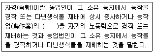
- 20분의 1 이상
- 10분의 1 이상
- 4분의 1 이상
- 2분의 1 이상
(정답률: 58%)
91. 국토의 계획 및 이용에 관한 법률상 도시ㆍ군관리계획의 입안을 위한 기초조사 등에 관한 내용으로 옳지 않은 것은?
- 도시ㆍ군관리계획 입안을 위한 기초조사의 내용에 환경성 검토를 포함하여야 한다.
- 기초조사의 내용에 토지의 토양, 입지, 활용가능성 등 토지의 적성평가를 포함하여야 한다.
- 지구단위계획을 입안하는 구역이 도심지에 위치하는 경우 규정에 따른 기초조사, 토지의 적성에 대한 평가를 반드시 실시하여야 한다.
- 지구단위계획구연안의 나대지 면적비율에 따라 토지의 적성평가를 하지 않을 수도 있다.
(정답률: 42%)
92. 다음은 자연공원법규상 공원점료 등의 징수를 위한 점용료 또는 사용료 요율기준이다. ()안에 알맞은 것은?
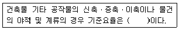
- 인근 토지 임대료 추정액의 100분의 20 이상
- 인근 토지 임대료 추정액의 100분의 30 이상
- 인근 토지 임대료 추정액의 100분의 40 이상
- 인근 토지 임대료 추정액의 100분의 50 이상
(정답률: 70%)
93. 국토기본법령상 국토정책위원회와 분과위원회에 두는 전문위원의 위원수와 임기기준으로 옳은 것은?
- 전문위원의 수는 3명 이내로 하며, 임기는 2년으로 한다.
- 전문위원의 수는 3명 이내로 하며, 임기는 3년으로 한다.
- 전문위원의 수는 10명 이내로 하며, 임기는 2년으로 한다.
- 전문위원의 수는 10명 이내로 하며, 임기는 3년으로 한다.
(정답률: 50%)
94. 습지보전법규상 습지보호지역 중 4분의 1이상에 해당하는 면적의 습지를 불가피하게 훼손하게 되는 경우 당해 습지보호지역 중 존치해야 하는 비율(기준)은?
- 지정 당시의 습지보호지역 면적의 2분의 1이상
- 지정 당시의 습지보호지역 면적의 3분의 1이상
- 지정 당시의 습지보호지역 면적의 4분의 1이상
- 지정 당시의 습지보호지역 면적의 10분의 1이상
(정답률: 64%)
95. 야생생물 보호 및 관리에 관한 법률 시행규칙상 수렵면허 취소 또는 정지 등과 관련한 행정처분의 개별기준 중 수렵 중에 고의 또는 과실로 다른 사람의 재산에 피해를 준 경우 위반 차수별 행정처분기준으로 옳은 것은?
- 1차 : 면허정지 3개월, 2차 : 면허정지 6개월, 3차 : 면허취소
- 1차 : 경고, 2차 : 면허정지 1개월, 3차 : 면허정지 3개월
- 1차 : 경고, 2차 : 면허정지 3개월, 3차 : 면허취소
- 1차 : 면허정지 1개월, 2차 : 면허정지 3개월, 3차 : 면허정지 6개월
(정답률: 74%)
96. 산지관리법상 산지에 포함되는 토지로서 옳은 것은?
- 집단적으로 생육한 입목단지내의 유지 및 제방
- 집단적으로 생육한 입목이 일시 상실된 토지
- 집단적으로 생육한 입목 단지 내의 한계농지
- 집단적으로 생육한 입목단지내의 초지조성지
(정답률: 40%)
97. 개발제한구역의지정 및 관리에 관한 특별조치법시행령상 개발제한구역 지정대상 기준에 해당하지 않는 것은?
- 국가보안상 개발을 제한할 필요가 있는 지역
- 도시의 정체성 확보 및 적정한 성장 관리를 위하여 개발을 제한할 필요가 있는 지역
- 도시가 무질서하게 확산되는 것 또는 서로 인접한 도시가 시가지로 연결되는 것을 방지하기 위하여 개발을 제한할 필요가 있는 지역
- 도시의 주거환경 개선 및 취락시설 정비와 인구분포도확인점검을 위해 개발을 제한할 필요가 있는 지역
(정답률: 53%)
98. 산지관리법상 시설물의 철거명령이나 형질변경한 산지의 복구명령을 위반한 자에 대한 벌칙기준으로 옳은 것은?
- 7년 이하의 징역 또는 5천만원 이하의 벌금에 처한다.
- 5년 이하의 징역 또는 3천만원 이하의 벌금에 처한다.
- 3년 이하의 징역 또는 1천만원 이하의 벌금에 처한다.
- 1년 이하의 징역 또는 5백만원 이하의 벌금에 처한다.
(정답률: 37%)
99. 다음은 개발제한구역의 지정 및 관리에 관한 특별조치법 시행령상 지형도면의 작성ㆍ고시방법이다. ()안에 알맞은 것은?
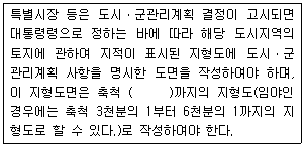
- 50분의 1부터 100분의 1
- 100분의 1부터 150분의 1
- 250분의 1부터 500분의 1
- 500분의 1부터 1천500분의 1
(정답률: 62%)
100. 야생생물 보호 및 관리에 관한 법률상 수렵면허의 취소 또는 정지처분을 받은 자는 언제까지 수렵면허증을 시장ㆍ군수ㆍ구청장에게 반납(기준)하여야 하는가?
- 취소 또는 정지처분을 받은 당일 날
- 취소 또는 정지처분을 받은 날부터 1일 이내
- 취소 또는 정지처분을 받은 날부터 3일 이내
- 취소 또는 정지처분을 받은 날부터 7일 이내
(정답률: 66%)